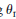
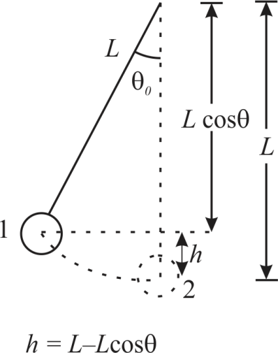

The potential energy is given by,
Here,  is the mass,
is the mass,  is the acceleration due to gravity and is the height from the reference.
is the acceleration due to gravity and is the height from the reference.
The kinetic energy is given by,
Here,  is the velocity.
is the velocity.
(II) Derive a formula for the maximum speed v max of a simple pendulum bob in terms of g, the length l and the maximum angle of swing  max
The potential energy is given by,
Here, is the mass, is the acceleration due to gravity and is the height from the reference.
The kinetic energy is given by,
Here, is the velocity.
The diagram of the pendulum is drawn below:

Consider the pendulum is attached to the ceiling. The length of the pendulum is mentioned as  and the angle of swing is given as
and the angle of swing is given as . Also, consider the mass of the pendulum as
. Also, consider the mass of the pendulum as .
.
Here, when the pendulum is at angle in the left of the normal as shown in the diagram above, then at that time the pendulum has potential energy and when it arrives at the bottom at the time of swing, then it contains kinetic energy. Take the bottom point as the reference. The energy is conserved in this case as the energy acting here is the conservative energy.
At point ,
the pendulum is at the highest point of its swing and it contains only
potential energy as it is in rest. The potential energy of the pendulum
at point
,
the pendulum is at the highest point of its swing and it contains only
potential energy as it is in rest. The potential energy of the pendulum
at point  is given by,
is given by,
Here, height is given by,
Substitute for  in the expression of and solve,
in the expression of and solve,
Now, consider the situation when the pendulum is at point that
is at the bottom of the swing. In this case, the pendulum has only
kinetic energy and it contains no potential energy as the point
that
is at the bottom of the swing. In this case, the pendulum has only
kinetic energy and it contains no potential energy as the point  or
the bottom point is considered as the point of reference for the
potential energy. Also, in its swing, it has the maximum velocity at
point
or
the bottom point is considered as the point of reference for the
potential energy. Also, in its swing, it has the maximum velocity at
point . The kinetic energy of the point
. The kinetic energy of the point  is calculated as follows:
is calculated as follows:
Substitute  for
for  in the above mentioned expression of the kinetic energy and solve,
in the above mentioned expression of the kinetic energy and solve,
From the conservation of energy, the energy of the pendulum at point  is equal to the energy at point
is equal to the energy at point . This gives the expression from energy conservation as,
. This gives the expression from energy conservation as,
Here, and are the initial potential energy and kinetic energy at point  and and are the final potential energy and kinetic energy at point
and and are the final potential energy and kinetic energy at point .
.
The initial kinetic energy of the pendulum is zero as the pendulum is at rest and the final potential energy is zero. Then, the expression from the conservation of energy becomes,
Substitute for and for in the expression and solve,
Further solve for ,
,
This is the formula for  of a simple pendulum in terms of, the length
of a simple pendulum in terms of, the length  and the angle of swing
and the angle of swing
Hence, the expression for maximum speed is.
is.